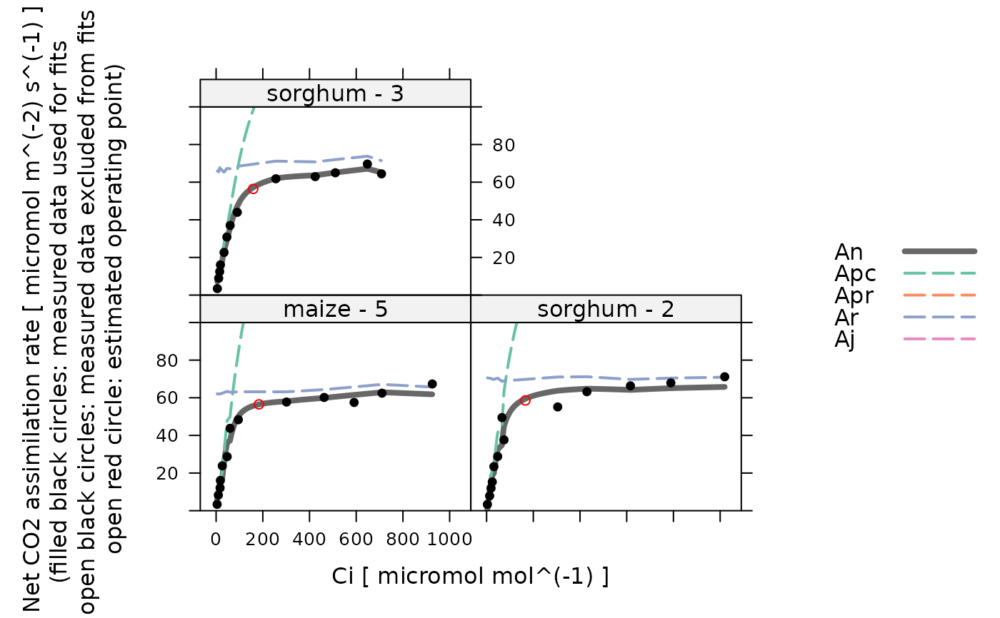

Plot the results of a C4 CO2 response curve fit
plot_c4_aci_fit.RdPlots the output from fit_c4_aci.
Usage
plot_c4_aci_fit(
fit_results,
identifier_column_name,
x_name,
plot_operating_point = TRUE,
a_column_name = 'A',
ci_column_name = 'Ci',
pcm_column_name = 'PCm',
...
)Arguments
- fit_results
A list of three
exdfobjects namedfits,parameters, andfits_interpolated, as calculated byfit_c4_aci.- identifier_column_name
The name of a column in each element of
fit_resultswhose value can be used to identify each response curve within the data set; often, this is'curve_identifier'.- x_name
The name of the column that should be used for the x-axis in the plot. This should refer to either
'Ci'or'Cc', and it must be the same asci_column_nameorcc_column_name.- plot_operating_point
A logical value indicating whether to plot the operating point.
- a_column_name
The name of the columns in the elements of
fit_resultsthat contain the net assimilation inmicromol m^(-2) s^(-1); should be the same value that was passed tofit_c4_aci.- ci_column_name
The name of the columns in the elements of
fit_resultsthat contain the intercellular CO2 concentration inmicromol mol^(-1); should be the same value that was passed tofit_c4_aci.- pcm_column_name
The name of the columns in the elements of
exdf_objthat contain the partial pressure of CO2 in the mesophyll, expressed inmicrobar.- ...
Additional arguments to be passed to
xyplot.
Details
This is a convenience function for plotting the results of a C4 A-Ci curve
fit. It is typically used for displaying several fits at once, in which case
fit_results is actually the output from calling
consolidate on a list created by calling by.exdf
with FUN = fit_c4_aci.
The resulting plot will show curves for the fitted rates An,
Apr, Apc, and Ar, along with points for the measured
values of A, and (optionally) the estimated operating point. The x-axis
can be set to either Ci or PCm.
Internally, this function uses xyplot to perform the
plotting. Optionally, additional arguments can be passed to xyplot.
These should typically be limited to things like xlim, ylim,
main, and grid, since many other xyplot arguments will be
set internally (such as xlab, ylab, auto, and others).
See the help file for fit_c4_aci for an example using this
function.
Value
A trellis object created by lattice::xyplot.
Examples
# Read an example Licor file included in the PhotoGEA package
licor_file <- read_gasex_file(
PhotoGEA_example_file_path('c4_aci_1.xlsx')
)
# Define a new column that uniquely identifies each curve
licor_file[, 'species_plot'] <-
paste(licor_file[, 'species'], '-', licor_file[, 'plot'] )
# Organize the data
licor_file <- organize_response_curve_data(
licor_file,
'species_plot',
c(9, 10, 16),
'CO2_r_sp'
)
# Calculate temperature-dependent values of C4 photosynthetic parameters
licor_file <- calculate_temperature_response(licor_file, c4_temperature_param_vc)
# Calculate the total pressure in the Licor chamber
licor_file <- calculate_total_pressure(licor_file)
# For these examples, we will use a faster (but sometimes less reliable)
# optimizer so they run faster
optimizer <- optimizer_nmkb(1e-7)
# Fit all curves in the data set
aci_results <- consolidate(by(
licor_file,
licor_file[, 'species_plot'],
fit_c4_aci,
Ca_atmospheric = 420,
optim_fun = optimizer
))
# View the fits for each species / plot
plot_c4_aci_fit(aci_results, 'species_plot', 'Ci', ylim = c(0, 100))
